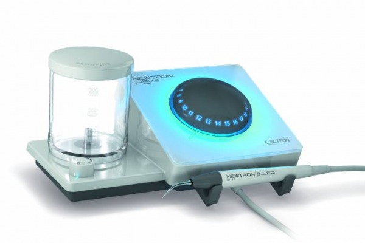
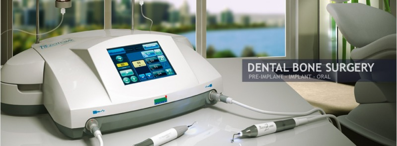
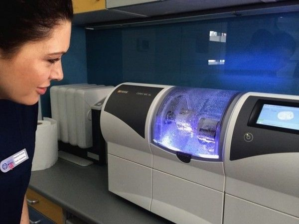
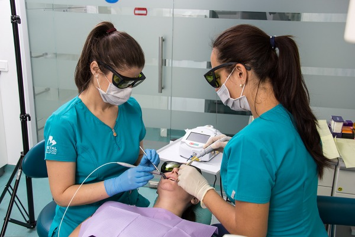
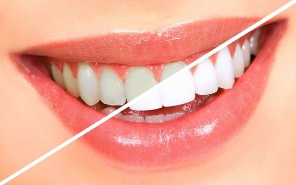
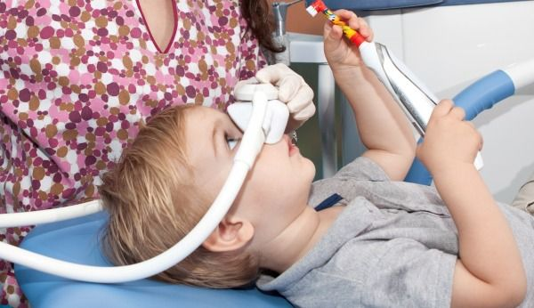
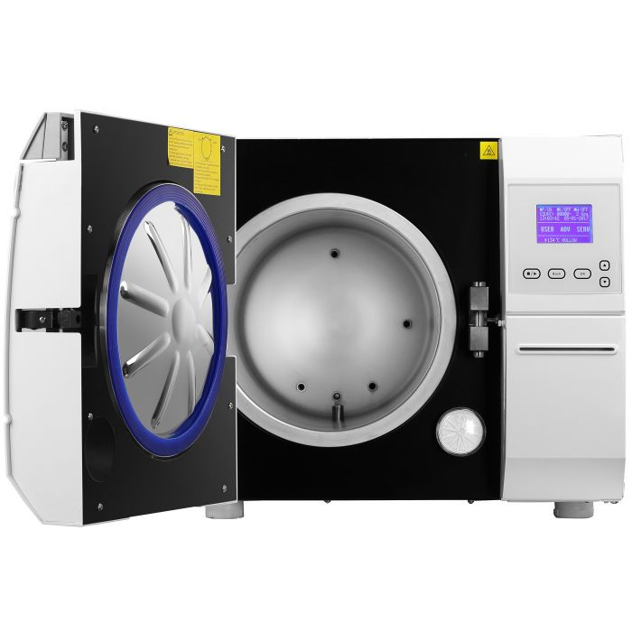

Tehnologiile utilizate

Newtron
Siguranta, eficienta si confort în tratamentele dentare
Newtron este un dispozitiv piezo-electric cu ultrasunete folosit în numeroase
interventii de parodontologie, endodontie, profilaxie, stomatologie conservativă
si restaurativa, asigurand o precizie remarcabila. Este utilizat cu succes
in realizarea detartrajului datorita faptului ca este un mijloc modern,
ergonomic si mult mai eficient pentru indepărtarea placii bacteriene si a tartrului.
In plus, este mai bine tolerat de catre bolnavii ce suferă de boli cardiace si
de purtatorii de pacemaker cardiac, fiind mult mai putin dureros sau
traumatizant decat metoda clasica.
Cum se realizeaza?
Kitul Newtron contine două dispozitive: bagheta si aparatul cu ultrasunete,
de care este atasata. Varful baghetei produce vibratii ultrasonice care curata
dintii, indepartand in totalitate reziduurile.
Avantaje dispozitiv Newtron
Aparatul Newtron prezinta mai multe tipuri de avantaje direct legate de
structura dentara, neintervenind asupra acesteia, precum în procedurile
clasice, manuale. Asadar, indeparteaza tartrul dentar, reda culoarea naturala
a dintilor intr-un timp de efectuare mult mai redus si fara anestezie locala sau
substante chimice. Vibratiile controlate, precizia foarte bună, lipsa senzatiei
de ancalzire si modul delicat de functionare asigura o stare de siguranta si
confort.

Piezotome
Cea mai noua tehnologie stomatologica
pentru tratamente precise, minim invazive.
Piezotome este un dispozitiv chirurgical cu ultrasunete folosit in chirurgia dentara,
in special în cea premergatoare realizarii implanturilor si in interventiile
parodontologice. Cu ajutorul lui putem rezolva o gama larga de probleme
legate de implantologie si chirurgie oro-maxilo-faciala, fara
afectarea tesutului moale (gingia).
Datorita combinatiei sale de ultrasunete obisnuite necesare tratamentului
conventional, cu ultrasunete de mare putere pentru chirurgia osoasa,
Piezotome reduce semnificativ traumele cauzate de interventii,
comparativ cu tratamentele clasice. Acest lucru este posibil gratie
faptului ca semnalul ultrasonic permite relaxarea tesuturilor, obtinand o
regenerare excelenta a celulelor, ceea ce duce la o vindecare mult mai rapidă.
Cu Piezotome reducem riscul de a pierde tesut osos in cadrul interventiilor
laborioase si protejam gingia de posibilele complicatii postextractionale.

Tehnologia CAD/CAM
Tehnologia Cerec 3D CAD/CAM – Viitorul in medicina dentara!
Tehnologia CAD/CAM isi are originile la jumatatea anilor ’80, insa în ultimul
deceniu a fost intens valorificata si i s-au adus foarte multe imbunatatiri.
Considerata o tehnica orientata spre viitor, în continua evolutie,
este extrem de importanta atat pentru tehnicianul dentar cat si pentru medicul
stomatolog prin avantajele pe care le ofera. Tratamentele de estetica dentara si
cele protetice au devenit tot mai solicitate de catre pacientii care doresc
sa beneficieze de tratamente nedureroase si care sa le redea sau sa le
imbunatateasca atat functia masticatorie, dar mai ales functia estetica.
Omul modern asociaza starea de sanatate si frumusetea cu un zambet alb,
stralucitor. Acesta este si scopul medicilor specialisti care pun accent pe
restaurarea structurilor dentare cu materiale biocompatibile, realizate cu
ajutorul tehnologiei computerizate, perfect integrate in fizionomia
fiecarui pacient.
Sistemul CAD/CAM permite realizarea unor piese protetice care se incadreaza
in cerintele stomatologului si pacientului, fiind excelente atat din punct
de vedere estetic, dar mai ales din punct de vedere al timpului foarte scurt
necesar realizarii unei restaurari. Pacientul clinicii dentare beneficiaza
de un tratament nedureros si rezultatele sunt vizibile in cel mai scurt timp.
Sistemul CAD/CAM este alcatuit dintr-un scanner, un computer cu un soft
de imagine 3D si o unitate de frezare cu freze diamantate, rapide si precise
care transforms datele procesate in produs finit.
Scopurile sale sunt precise si de un real ajutor în sfera medicinei dentare:
cresterea eficientei tratamentului dentar, standardizarea restaurarilor protetice,
dezvoltarea unor noi grupe de materiale si concepte de tratament dentar.

Laser dentar
Uita de sunetul chinuitor care nu iti dadea pace pe scaunul stomatologic!
O metoda revolutionara are grija ca dantura ta sa fie impecabila si
economisesti si timp pretios: Laserul dentar! A fost introdus in
practica stomatologica in urma cu aproximativ 30 ani si a produs inovatii
remarcabile în tratamentele specifice.
Laserul poate ajuta medicul dentist sa execute unele proceduri pe care nu
le putea realiza cu ajutorul instrumentelor traditionale, iar pacientul nu mai
este nevoit sa suporte dureri chinuitoare, sangerari si sedinte repetate pentru a
ajunge la rezultatul dorit.
Laserul dentar, ce foloseste tehnica emulsiilor de lumina, este inclus in
numeroase interventii stomatologice.
Este nevoie de mai multe aparate cu laser pentru a acoperi toata gama de manopere
realizate in cabinetul stomatologic. Fiecare tip de laser are o caracteristica
constanta: lungimea de unda a radiatiei laser. In functie de lungimea de unda,
diferiti laseri au diferite actiuni asupra tesuturilor, de unde rezulta ca un
singur laser nu poate acoperi toata gama de manopere dentare.
Exista echipamente pentru utilizarea in terapia laser cu nivel scazut de radiatii,
laseri care au in general putere mica si cu o arie de utilizare relativ restransă.
Exista laseri pentru chirurgia tesuturilor dentare dure (pot indeparta structurile
dentare dure, osul si pot fi utilizati si la interventii pe tesuturi moi).

Lampa albire ZOOM Philips WhiteSpeed LED
Sistemul ZOOM WhiteSpeed LED creat de Philips este numărul 1 pe piata sistemelor
de albire profesionala din SUA, conform ADA (American Dental Association).
Procedeul este cat se poate de sigur si de rapid. Intr-o singura sedinta de 45 de
minute iti poti albi dintii cu 8-12 nuante, fara efecte secundare, smaltul
acestora fiind protejat.
De ce recomandam Lampa Zoom Philips?
In mod obisnuit, gelul folosit pentru albirea dentara actioneaza chiar si fara
stimulare externa, insa rezultatele nu sunt spectaculoase. Utilizand lampa pentru
albire se accelereaza procesul chimic si se obtine o crestere semnificativa a
eficientei gelului. Un alt avantaj important este timpul scurt necesar pentru
obtinerea culorii dorite, scazand astfel riscul aparitiei sensibilitatii dentare
in urma procedurii.
Incearca si tu cea mai noua tehnologie de albire disponibila la nivel mondial
si bucura-te de rezultate eficiente si de durata!
Cand te uiti in oglinda, ce culoare au dintii? Un zambet frumos nu poate trece
neobservat, mai ales atunci cand dintii sunt de un alb stralucitor!
Culoarea galbuie sau petele de pe dinti pot disparea in urma unei simple vizite la
dentist in cadrul careia se efectueaza procedura de albire cu lumina rece!

Inhalosedare
Ai teama de stomatolog? Acum nu mai este cazul!
Inhalosedarea este o metoda de sedare constienta de-a dreptul revolutionara,
cu ajutorul careia putem obtine o stare de relaxare in vederea realizarii
tratamentului stomatologic.
Te sperie gandul ca trebuie sa-ti vizitezi stomatologul, ajungi în fata cabinetului
si nu ai curaj sa intri, aparatele pe care le vezi acolo te tulbura sau, mai rau,
iti provoaca senzatie de lesin? Cu siguranta faci parte din categoria oamenilor cu
frica de stomatolog. Acestei categorii de pacienti li se recomanda, din ce în ce mai
des in zilele noastre, inhalosedarea (sedarea constienta).
Aceasta este denumirea unei tehnici de anestezie in stomatologie, folosita pe scara
larga in SUA si Europa, dar de ceva timp si in Romania. Poate fi aplicata aproape
tuturor, dar medicii o recomanda in special pacientilor, fie ei adulti sau copii,
care prezinta frica de tratamentele stomatologice.
Ce presupune aceasta operatiune?
Scopul acestei tehnici este de a obtine un pacient relaxat, in conditii de confort
pe scaunul stomatologic si pentru care tratamentul stomatologic sa ramana o
experientă placuta.
Pacientului, asezat pe scaunul stomatologic, i se aplica o masca nazala cu
ajutorul careia inhaleaza un amestec de protoxid de azot în combinatie cu oxigen,
rezultand un gaz ilariant care are atat proprietati sedative, cat si usor
analgezice. Acest gaz induce o stare de relaxare, de bine.
- Mai multe imagini pentru o perspectiva cat mai buna -
